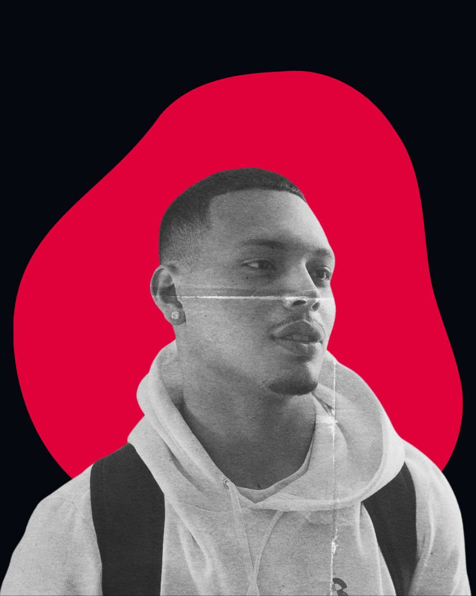
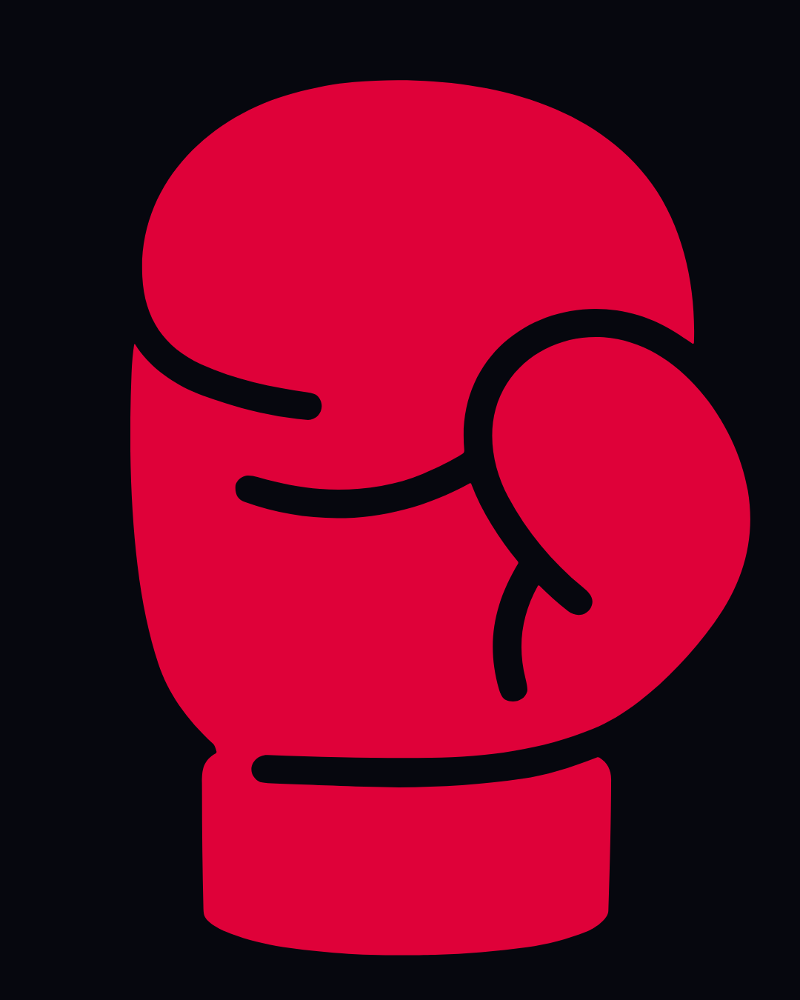
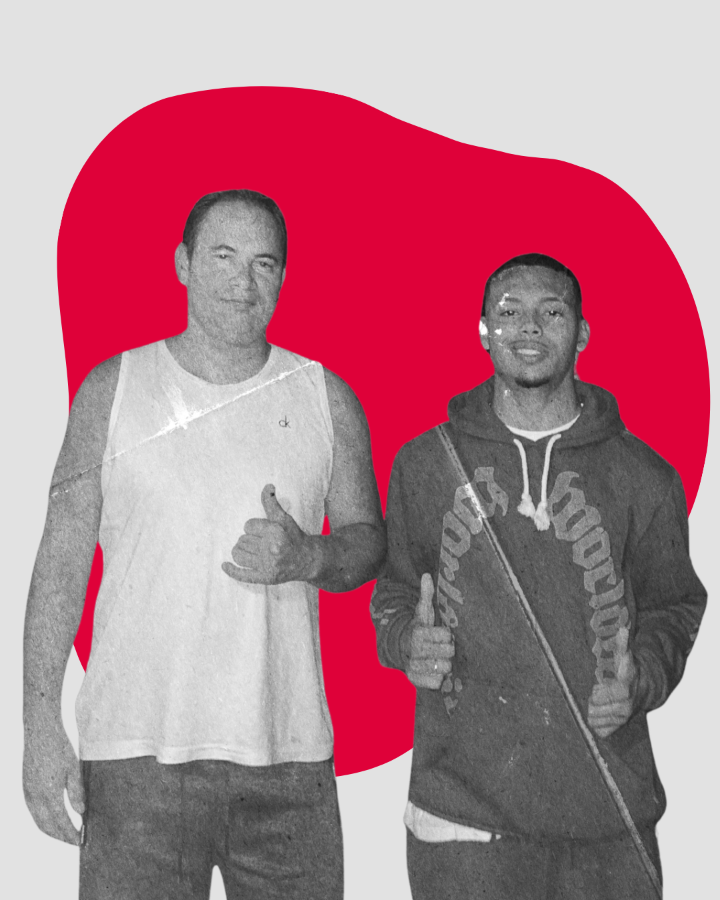
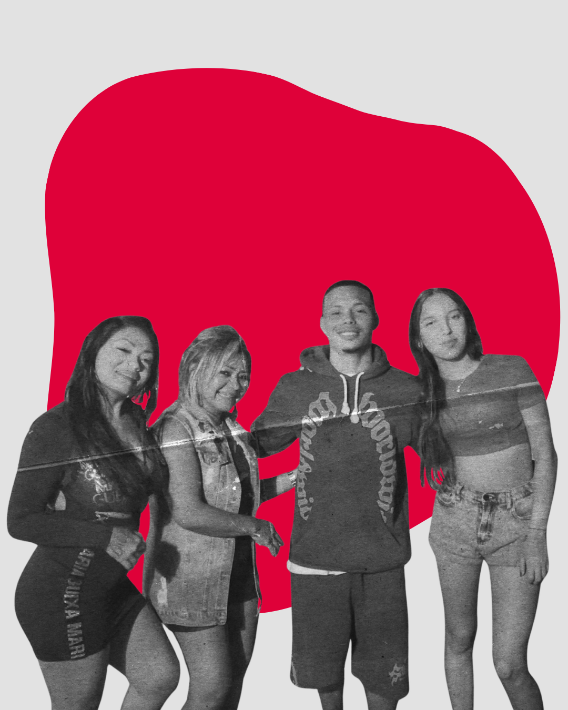
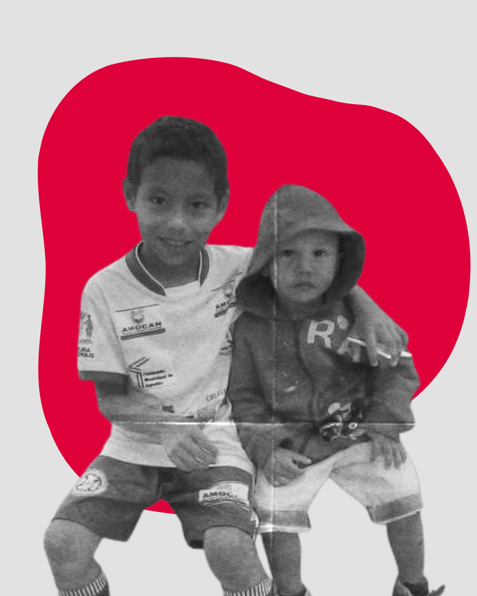
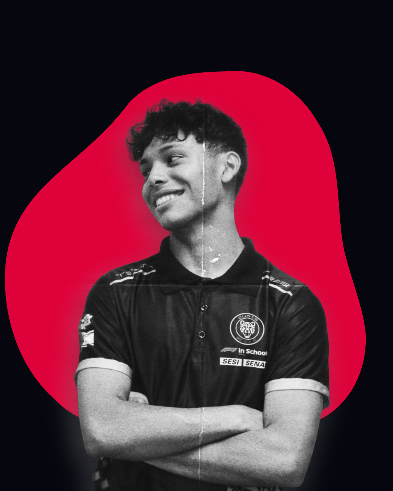

Vitor Guilherme M.C.
Estudante de Análise e Desenvolvimento de Sistemas, com foco em tecnologia e banco de dados. Possuo conhecimentos em HTML, CSS, Python e SQL, buscando evolução constante e experiência prática.
Habilidades
- HTML & CSS
- Python
- SQL
- Figma
- Canva (Design)
- Pacote Office
Objetivo
Atuar na área de tecnologia, desenvolvendo minhas habilidades, adquirindo experiência e contribuindo com soluções eficientes.

Formação Técnica
Técnico em Desenvolvimento de Sistemas
Escola SESI
Formação focada na estruturação de lógica de programação, modelagem de banco de dados e desenvolvimento de soluções tecnológicas inovadoras. Preparo prático para enfrentar os desafios reais do mercado de TI.
MÚSICAS
Gosto muito de música e acredito que ela diz muito sobre quem a gente é. Sou apaixonado por blues (B.B. King) e pela cena nacional de rap/trap (Alee e Veigh).
Saiba mais
ESPORTES
O Muay Thai ajudou a moldar quem eu sou hoje. Encontrei disciplina, ética, respeito e maturidade. Também mantenho uma rotina com academia e corrida.
Saiba maisHOBBIES
Um dos meus principais hobbies é grafitar, desenhar e expressar minhas ideias através da arte. Praias, rolês e estar com amigos fazem parte da minha rotina ideal.
Saiba maisUm pouco de mim
Meus Projetos
Transformando lógica em soluções visuais e funcionais.
Sistema de Gestão
Desenvolvimento de um sistema CRUD de cadastro e controle de usuários, com foco em segurança e lógica.
Landing Page UI/UX
Interface responsiva focada em conversão, desenvolvida a partir de um protótipo de alta fidelidade no Figma.
Modelagem de Dados
Estruturação de banco de dados relacional complexo para um sistema de biblioteca online com milhares de registros.
Inspirações

VELHOTE
Meu tio foi como um pai pra mim. Sempre cuidou de mim desde pequeno e foi ele quem me ensinou a ser homem, com valores e caráter.

Mulheres da Minha Vida
Minha mãe, minha vó e minha namorada. Mulheres guerreiras, que moveram montanhas por mim. Todos os dias aprendo algo com elas.

Pivete
Eu adoro esse moleque. Pra mim, ele é meu bem mais precioso, alguém que eu tenho o dever de proteger, eu amo meu irmão.
O que eu estudo
As áreas de conhecimento que embasam minha trajetória em ADS.
Atividades do Técnico
Mergulhe nos projetos práticos, algoritmos, modelagem de banco de dados e todas as atividades diretamente ligadas à minha formação técnica profissionalizante.
Acessar atividades técnicasExperiências Acadêmicas
Minha jornada não se resume apenas a códigos. Participei de diversos projetos, pesquisas e competições que moldaram minha forma de pensar e resolver problemas práticos no mundo real.
Descubra as atividades, certificações e conquistas que constroem minha vivência profissional além da sala de aula.
Acessar novas experiencias →
Vamos construir algo juntos?
Seja para discutir tecnologia, oportunidades de estágio ou apenas tomar um café virtual, minha caixa de entrada está aberta.
Me mande um E-mail